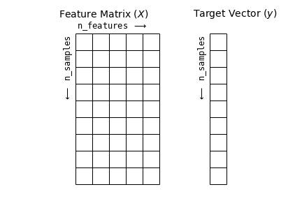

Bu sayfa orijinal kitap bölümünün eksiksiz Türkçe uyarlamasıdır — atlanan başlık/kod yoktur. Zor yerlerde ek ders notu ve 🧪 Şimdi deneyin kutuları vardır.
Orijinal (EN): 05.02 Introducing Scikit-Learn · Jupyter notebook
Scikit-Learn'e Giriş
Orijinal: 05.02 Introducing Scikit-Learn
Bir dizi makine öğrenmesi algoritmasının sağlam uygulamalarını sunan birkaç Python kütüphanesi vardır. En bilinenlerinden biri, yaygın algoritmaların çoğunun verimli sürümlerini sağlayan Scikit-Learn'dir. Scikit-Learn temiz, tutarlı ve akıcı bir API ile çok yararlı ve eksiksiz çevrimiçi dokümantasyonla öne çıkar. Bu tutarlılığın yararı, bir model türü için Scikit-Learn'ün temel kullanımını ve sözdizimini anladığınızda yeni bir modele veya algoritmaya geçmenin kolay olmasıdır.
Bu bölüm Scikit-Learn API'sine genel bir bakış sunar. Bu API öğelerinin sağlam anlayışı, sonraki bölümlerdeki makine öğrenmesi algoritmalarının ve yaklaşımlarının daha uygulamalı tartışmasının temelini oluşturur.
Scikit-Learn'de veri temsilinden başlayacak, Estimator API'sine inecek ve son olarak el yazısı rakam görüntüleri kümesini keşfetmek için bu araçları kullanan daha ilginç bir örneğe geçeceğiz.
Scikit-Learn'de Veri Temsili
Makine öğrenmesi veriden model oluşturmaktır; bu yüzden verinin nasıl temsil edilebileceğini tartışarak başlayacağız. Scikit-Learn içinde veriyi düşünmenin en iyi yolu tablolar üzerinden yapılır.
Temel bir tablo, satırların veri kümesindeki tek tek öğeleri, sütunların ise bu öğelerle ilişkili nicelikleri temsil ettiği iki boyutlu bir veri ızgarasıdır.
Örneğin 1936'da Ronald Fisher tarafından ünlü biçimde analiz edilen Iris veri kümesini düşünün.
Bu veri kümesini Seaborn kütüphanesiyle Pandas DataFrame olarak indirip ilk birkaç satıra bakabiliriz:
import seaborn as sns
iris = sns.load_dataset('iris')
iris.head()Burada her satır tek bir gözlemlenen çiçeği ifade eder; satır sayısı veri kümesindeki toplam çiçek sayısıdır.
Genelde matrisin satırlarına örnek (samples), satır sayısına n_samples deriz.
Benzer şekilde her sütun, her örneği tanımlayan belirli bir nicel bilgi parçasıdır.
Genelde sütunlara öznitelik (features), sütun sayısına n_features deriz.
Öznitelik Matrisi
Tablo düzeni, bilginin iki boyutlu sayısal dizi veya matris olarak düşünülebileceğini gösterir; buna öznitelik matrisi (features matrix) deriz.
Gelenek gereği bu matris çoğu zaman X adlı değişkende tutulur.
Öznitelik matrisi iki boyutlu, [n_samples, n_features] şeklinde varsayılır ve çoğunlukla NumPy dizisi veya Pandas DataFrame içinde bulunur; bazı Scikit-Learn modelleri SciPy seyrek matrislerini de kabul eder.
Örnekler (satırlar) her zaman veri kümesinde tanımlanan tek tek nesnelere karşılık gelir: bir çiçek, kişi, belge, görüntü, ses dosyası, video, astronomik cisim veya nicel ölçümlerle tanımlayabileceğiniz başka herhangi bir şey.
Öznitelikler (sütunlar) her örneği nicel olarak tanımlayan farklı gözlemlerdir. Öznitelikler çoğu zaman gerçek sayılıdır; bazı durumlarda Boolean veya ayrık değerli olabilir.
Hedef Dizisi
Öznitelik matrisi X'e ek olarak genelde etiket veya hedef dizisiyle çalışırız; gelenek gereği bunu y adlandırırız.
Hedef dizisi genelde n_samples uzunluğunda tek boyutludur ve çoğunlukla NumPy dizisi veya Pandas Series içinde bulunur.
Hedef dizisi sürekli sayısal değerler veya ayrık sınıflar/etiketler içerebilir.
Bazı Scikit-Learn tahmin edicileri [n_samples, n_targets] biçiminde çoklu hedefi desteklese de, çoğunlukla tek boyutlu hedef dizisiyle çalışacağız.
Yaygın bir karışıklık, hedef dizisinin diğer öznitelik sütunlarından nasıl farklılaştığıdır. Hedef dizisinin ayırt edici özelliği, genelde özniteliklerden tahmin etmek istediğimiz nicelik olmasıdır; istatistikte bağımlı değişkendir.
Önceki veride örneğin diğer ölçümlere dayanarak çiçek türünü tahmin edecek bir model kurmak isteyebiliriz; bu durumda species sütunu hedef dizisi sayılır.
Bu hedef dizisiyle Seaborn'u (Seaborn ile Görselleştirme bölümünde tartışıldı) kullanarak veriyi görselleştirebiliriz:
%matplotlib inline
import seaborn as sns
sns.pairplot(iris, hue='species', height=1.5);Scikit-Learn için öznitelik matrisi ve hedef dizisini DataFrame'den çıkaracağız; bunu Bölüm 3'teki Pandas DataFrame işlemleriyle yapabiliriz:
X_iris = iris.drop('species', axis=1)
X_iris.shapey_iris = iris['species']
y_iris.shapeÖzetle, öznitelik ve hedef değerlerinin beklenen düzeni aşağıdaki şekilde görselleştirilir.

Veri bu biçimde olduktan sonra Scikit-Learn'ün Estimator API'sine geçebiliriz.
Estimator API
Scikit-Learn API'si Scikit-Learn API makalesinde özetlenen şu ilkelere göre tasarlanmıştır:
- Tutarlılık: Tüm nesneler sınırlı bir yöntem kümesinden türetilen ortak bir arayüzü paylaşır; dokümantasyon tutarlıdır.
- Denetlenebilirlik: Belirtilen tüm parametre değerleri genel nitelikler olarak açıktır.
- Sınırlı nesne hiyerarşisi: Yalnızca algoritmalar Python sınıflarıyla temsil edilir; veri kümeleri standart biçimlerde (NumPy, Pandas, SciPy seyrek) temsil edilir; parametre adları standart Python dizeleridir.
- Birleşim: Birçok görev daha temel algoritmaların dizileri olarak ifade edilebilir; Scikit-Learn bunu mümkün olduğunca kullanır.
- Mantıklı varsayılanlar: Kullanıcı parametresi gerektiğinde kütüphane uygun bir varsayılan tanımlar.
Pratikte bu ilkeler, temel ilkeler anlaşıldıktan sonra Scikit-Learn'ü çok kullanışlı kılar. Scikit-Learn'deki her makine öğrenmesi algoritması, geniş uygulama yelpazesi için tutarlı bir arayüz sunan Estimator API ile uygulanır.
API'nin Temelleri
En yaygın olarak Scikit-Learn Estimator API kullanım adımları şöyledir:
- Scikit-Learn'den uygun tahmin edici sınıfını içe aktararak bir model sınıfı seçin.
- Bu sınıfı istenen değerlerle örnekleyerek model hiperparametrelerini seçin.
- Veriyi bu bölümün başında anlatıldığı gibi öznitelik matrisi ve hedef vektörüne düzenleyin.
- Model örneğinin
fityöntemini çağırarak modeli veriye uydurun. - Modeli yeni veriye uygulayın:
- Denetimli öğrenmede genelde
predictile bilinmeyen veri için etiket tahmin edilir. - Denetimsiz öğrenmede genelde
transformveyapredictile veri dönüştürülür veya özellikleri çıkarılır.
- Denetimli öğrenmede genelde
Şimdi denetimli ve denetimsiz öğrenme yöntemlerinin birkaç basit uygulama örneğine geçeceğiz.
Denetimli Öğrenme Örneği: Basit Doğrusal Regresyon
Bu sürecin örneği olarak basit doğrusal regresyona — yani $(x, y)$ verisine doğru sığdırma durumuna — bakalım. Regresyon örneğimiz için aşağıdaki basit veriyi kullanacağız:
import matplotlib.pyplot as plt
import numpy as np
rng = np.random.RandomState(42)
x = 10 * rng.rand(50)
y = 2 * x - 1 + rng.randn(50)
plt.scatter(x, y);Veri hazır olduktan sonra daha önce özetlenen tarifi kullanabiliriz. Süreci adım adım izleyelim:
1. Model sınıfını seçin
Scikit-Learn'de her model sınıfı bir Python sınıfıyla temsil edilir.
Örneğin basit bir LinearRegression modeli hesaplamak için doğrusal regresyon sınıfını içe aktarabiliriz:
from sklearn.linear_model import LinearRegressionDaha genel doğrusal regresyon modelleri de vardır; ayrıntılar için sklearn.linear_model modül dokümantasyonuna bakın.
2. Model hiperparametrelerini seçin
Önemli bir nokta: model sınıfı, model örneğiyle aynı şey değildir.
Model sınıfına karar verdikten sonra hâlâ seçeneklerimiz vardır. Kullandığımız modele göre şu sorulardan bir veya birkaçına yanıt vermemiz gerekebilir:
- Ofseti (y-kesişini) sığdırmak istiyor muyuz?
- Model normalize edilsin mi?
- Öznitelikleri ön işleyerek model esnekliği artsın mı?
- Ne düzeyde düzenlileştirme (regularization) kullanılsın?
- Kaç model bileşeni kullanılsın?
Bunlar model sınıfı seçildikten sonra verilmesi gereken önemli seçimlerdir. Bu seçimler genelde hiperparametre olarak adlandırılır; model veriye uydurulmadan önce ayarlanır. Scikit-Learn'de hiperparametreler model örneği oluşturulurken verilir. Hiperparametreleri nicel seçmeyi Hiperparametreler ve Model Doğrulama bölümünde ele alacağız.
Doğrusal regresyon örneğinde fit_intercept hiperparametresiyle kesişimi sığdırmak istediğimizi belirterek LinearRegression örneği oluşturabiliriz:
model = LinearRegression(fit_intercept=True)
modelModel örneklendiğinde yalnızca hiperparametre değerlerinin saklandığını unutmayın. Özellikle model henüz hiçbir veriye uygulanmamıştır: Scikit-Learn API, model seçimi ile modelin veriye uygulanması arasındaki ayrımı çok net yapar.
3. Veriyi öznitelik matrisi ve hedef vektörüne düzenleyin
Daha önce Scikit-Learn veri temsilini inceledik; iki boyutlu öznitelik matrisi ve tek boyutlu hedef dizisi gerekir.
Burada hedef y zaten doğru biçimdedir (n_samples uzunluğunda dizi); x verisini [n_samples, n_features] boyutuna getirmemiz gerekir.
Bu durumda tek boyutlu diziyi yeniden şekillendirmek yeterlidir:
X = x[:, np.newaxis]
X.shape4. Modeli veriye uydurun
Şimdi modeli veriye uygulama zamanı. Bunu modelin fit yöntemiyle yaparız:
model.fit(X, y)Bu fit komutu modele bağlı bir dizi iç hesaplama tetikler; sonuçlar kullanıcının inceleyebileceği, sondaki alt çizgiyle biten model özniteliklerinde saklanır.
Scikit-Learn'de gelenek gereği fit sırasında öğrenilen tüm model parametreleri sondaki alt çizgiyle biter; bu doğrusal modelde örneğin:
model.coef_model.intercept_Bu iki parametre veriye basit doğrusal uyumun eğim ve kesişimini temsil eder. Sonuçları veri tanımıyla karşılaştırırsak, veriyi üretmek için kullanılan değerlere (eğim 2, kesişim –1) yakın olduklarını görürüz.
İç model parametrelerindeki belirsizlik sıkça sorulur.
Genel olarak Scikit-Learn, iç parametrelerden doğrudan çıkarım araçları sunmaz: parametre yorumu daha çok istatistiksel modelleme sorusudur; makine öğrenmesi modelin ne tahmin ettiğine odaklanır.
Uyum parametrelerinin anlamına inmek isterseniz statsmodels gibi başka araçlar vardır.
5. Bilinmeyen veri için etiket tahmin edin
Model eğitildikten sonra denetimli makine öğrenmesinin ana görevi, eğitim kümesinin parçası olmayan yeni veri hakkında ne söylediğine göre değerlendirmektir.
Scikit-Learn'de bunu predict yöntemiyle yaparız.
Bu örnekte "yeni veri" bir x değerleri ızgarasıdır; modelin hangi y değerlerini tahmin ettiğini sorarız:
xfit = np.linspace(-1, 11)Daha önce olduğu gibi bu x değerlerini [n_samples, n_features] öznitelik matrisine dönüştürmemiz, ardından modele vermemiz gerekir:
Xfit = xfit[:, np.newaxis]
yfit = model.predict(Xfit)Son olarak ham veriyi ve model uyumunu çizerek sonuçları görselleştirelim:
plt.scatter(x, y)
plt.plot(xfit, yfit);Genelde modelin etkinliği, sonuçların bilinen bir tem çizgisiyle karşılaştırılmasıyla değerlendirilir; bunu sonraki örnekte göreceğiz.
Denetimli Öğrenme Örneği: Iris Sınıflandırması
Daha önce tartıştığımız Iris veri kümesiyle sürecin başka bir örneğine bakalım. Sorumuz: Iris verisinin bir bölümüyle eğitilen model, kalan etiketleri ne kadar iyi tahmin eder?
Bu görev için her sınıfın eksen hizalı bir Gauss dağılımından çekildiğini varsayan Gauss naive Bayes üretici modelini kullanacağız (ayrıntılar: Derinlemesine: Naive Bayes). Hızlı olduğu ve seçilecek hiperparametre olmadığı için Gauss naive Bayes sıkça temel sınıflandırma modeli olarak kullanılır.
Modeli görmediği veride değerlendirmek istiyoruz; veriyi eğitim ve test kümelerine ayırırız.
Elle yapılabilir; train_test_split yardımcı işlevi daha uygundur:
from sklearn.model_selection import train_test_split
Xtrain, Xtest, ytrain, ytest = train_test_split(X_iris, y_iris,
random_state=1)Veri düzenlendikten sonra etiketleri tahmin etmek için tarifimizi uygularız:
from sklearn.naive_bayes import GaussianNB # 1. choose model class
model = GaussianNB() # 2. instantiate model
model.fit(Xtrain, ytrain) # 3. fit model to data
y_model = model.predict(Xtest) # 4. predict on new dataSon olarak tahmin edilen etiketlerin gerçek değerlerle eşleşme oranını görmek için accuracy_score yardımcısını kullanırız:
from sklearn.metrics import accuracy_score
accuracy_score(ytest, y_model)%97'nin üzerinde doğrulukla, bu çok basit sınıflandırma algoritmasının bile bu veri kümesi için etkili olduğunu görüyoruz!
Denetimsiz Öğrenme Örneği: Iris Boyut İndirgeme
Denetimsiz öğrenme örneği olarak Iris verisinin boyutunu indirerek görselleştirmeyi kolaylaştıralım. Iris verisi dört boyutludur: her örnek için dört öznitelik kaydedilmiştir.
Boyut indirgeme görevi, verinin temel özniteliklerini koruyan uygun daha düşük boyutlu bir temsil olup olmadığını belirlemeye odaklanır. Sıkça görselleştirme yardımcısı olarak kullanılır: dört boyutta çizmek, iki veya üç boyutta çizmekten çok daha zordur!
Burada hızlı doğrusal boyut indirgeme tekniği temel bileşen analizi (PCA; Derinlemesine: PCA) kullanacağız. Modele iki bileşen — yani verinin iki boyutlu temsili — döndürmesini isteyeceğiz.
Daha önce özetlenen adım dizisini izleyerek:
from sklearn.decomposition import PCA # 1. Choose the model class
model = PCA(n_components=2) # 2. Instantiate the model
model.fit(X_iris) # 3. Fit to data
X_2D = model.transform(X_iris) # 4. Transform the dataŞimdi sonuçları çizelim. Hızlı bir yol, sonuçları orijinal Iris DataFrame'ine ekleyip Seaborn lmplot ile göstermektir:
iris['PCA1'] = X_2D[:, 0]
iris['PCA2'] = X_2D[:, 1]
sns.lmplot(x="PCA1", y="PCA2", hue='species', data=iris, fit_reg=False);İki boyutlu temsilde türler oldukça iyi ayrılmış; PCA algoritması tür etiketlerini bilmiyordu! Bu, veri kümesinde nispeten basit bir sınıflandırmanın etkili olacağını — daha önce gördüğümüz gibi — düşündürür.
Denetimsiz Öğrenme Örneği: Iris Kümeleme
Şimdi Iris verisine kümeleme uygulayalım. Kümeleme algoritması herhangi bir etikete başvurmadan verinin belirgin gruplarını bulmaya çalışır. Burada Derinlemesine: Gauss Karışımları bölümünde ayrıntılı ele alınan Gauss karışım modeli (GMM) kullanacağız. GMM veriyi Gauss "lekeleri" koleksiyonu olarak modellemeye çalışır.
Gauss karışım modelini şöyle uydurabiliriz:
from sklearn.mixture import GaussianMixture # 1. Choose the model class
model = GaussianMixture(n_components=3,
covariance_type='full') # 2. Instantiate the model
model.fit(X_iris) # 3. Fit to data
y_gmm = model.predict(X_iris) # 4. Determine labelsYine küme etiketini Iris DataFrame'ine ekleyip Seaborn ile çizeceğiz:
iris['cluster'] = y_gmm
sns.lmplot(x="PCA1", y="PCA2", data=iris, hue='species',
col='cluster', fit_reg=False);Veriyi küme numarasına göre ayırınca GMM algoritmasının alt etiketleri ne kadar iyi kurtardığını görürüz: setosa türü küme 0 içinde mükemmel ayrılmış; versicolor ile virginica arasında küçük bir karışma var. Yani uzman olmadan bile çiçek ölçümleri, farklı tür gruplarının varlığını basit bir kümeleme algoritmasıyla otomatik tanımlamaya yeterince ayırt edicidir! Bu tür algoritma, alandaki uzmanlara örnekler arasındaki ilişkilere ipucu verebilir.
Uygulama: El Yazısı Rakamları
Bu ilkeleri daha ilginç bir problemde göstermek için optik karakter tanımanın bir parçasına bakalım: el yazısı rakamların tanınması. Gerçek dünyada bu hem görüntüde karakterleri bulmayı hem tanımayı içerir. Burada kısayol kullanıp Scikit-Learn'ün kütüphaneye gömülü önceden biçimlendirilmiş rakam kümesini kullanacağız.
Rakam Verisini Yükleme ve Görselleştirme
Scikit-Learn'ün veri erişim arayüzüyle bu veriye bakabiliriz:
from sklearn.datasets import load_digits
digits = load_digits()
digits.images.shapeGörüntü verisi üç boyutlu bir dizidir: 1.797 örnek, her biri 8×8 piksel ızgara. İlk yüz tanesini görselleştirelim:
import matplotlib.pyplot as plt
fig, axes = plt.subplots(10, 10, figsize=(8, 8),
subplot_kw={'xticks':[], 'yticks':[]},
gridspec_kw=dict(hspace=0.1, wspace=0.1))
for i, ax in enumerate(axes.flat):
ax.imshow(digits.images[i], cmap='binary', interpolation='nearest')
ax.text(0.05, 0.05, str(digits.target[i]),
transform=ax.transAxes, color='green')Scikit-Learn ile çalışmak için iki boyutlu [n_samples, n_features] temsil gerekir.
Her pikseli bir öznitelik sayarak piksel dizilerini düzleştirerek uzunluk 64 piksel değeri dizisi elde ederiz.
Ayrıca her rakam için önceden belirlenmiş etiketi veren hedef dizisi gerekir; ikisi de data ve target özniteliklerinde bulunur:
X = digits.data
X.shapey = digits.target
y.shape1.797 örnek ve 64 öznitelik görüyoruz.
Denetimsiz Öğrenme Örneği: Boyut İndirgeme
64 boyutlu parametre uzayında noktalarımızı görselleştirmek isteriz; bu kadar yüksek boyutta etkili görselleştirme zordur. Bunun yerine boyutu denetimsiz bir yöntemle indireceğiz. Burada Derinlemesine: Manifold Öğrenme bölümündeki Isomap manifold öğrenme algoritmasını kullanıp veriyi iki boyuta dönüştüreceğiz:
from sklearn.manifold import Isomap
iso = Isomap(n_components=2)
iso.fit(digits.data)
data_projected = iso.transform(digits.data)
print(data_projected.shape)Yansıtılan veri artık iki boyutlu. Yapıdan bir şey öğrenip öğrenemeyeceğimizi görmek için çizelim:
plt.scatter(data_projected[:, 0], data_projected[:, 1], c=digits.target,
edgecolor='none', alpha=0.5,
cmap=plt.cm.get_cmap('viridis', 10))
plt.colorbar(label='digit label', ticks=range(10))
plt.clim(-0.5, 9.5);Bu çizim, 64 boyutlu uzayda çeşitli rakamların ne kadar ayrıldığına dair iyi bir sezgi verir. Örneğin sıfır ve bir parametre uzayında çok az örtüşür; sezgisel olarak mantıklıdır: sıfır görüntü ortasında boştur, bir genelde ortada mürekkep vardır. Öte yandan birler ile dörtler arasında sürekli bir spektrum vardır: bazıları "şapkalı" bir çizer; bu da dörtlere benzetir.
Genel olarak kenarlarda bir miktar karışma olsa da farklı gruplar parametre uzayında oldukça yerelleşmiş görünür; bu da tam yüksek boyutlu veri kümesinde bile basit bir denetimli sınıflandırmanın uygun performans gösterebileceğini düşündürür. Deneyelim.
Rakamlarda Sınıflandırma
Rakam verisine bir sınıflandırma algoritması uygulayalım. Iris'te yaptığımız gibi veriyi eğitim ve test kümelerine ayırıp Gauss naive Bayes modeli uyduracağız:
Xtrain, Xtest, ytrain, ytest = train_test_split(X, y, random_state=0)from sklearn.naive_bayes import GaussianNB
model = GaussianNB()
model.fit(Xtrain, ytrain)
y_model = model.predict(Xtest)Modelin tahminleri elimizde; doğruluğu test kümesinin gerçek değerleriyle karşılaştırarak ölçeriz:
from sklearn.metrics import accuracy_score
accuracy_score(ytest, y_model)Bu çok basit modelle bile rakam sınıflandırmasında yaklaşık %83 doğruluk buluyoruz! Ancak tek bir sayı nerede hata yaptığımızı söylemez. Bunun güzel bir yolu karmaşıklık matrisidir; Scikit-Learn ile hesaplayıp Seaborn ile çizebiliriz:
from sklearn.metrics import confusion_matrix
mat = confusion_matrix(ytest, y_model)
sns.heatmap(mat, square=True, annot=True, cbar=False, cmap='Blues')
plt.xlabel('predicted value')
plt.ylabel('true value');Bu, yanlış etiketlenen noktaların nerede yoğunlaştığını gösterir: örneğin burada birçok iki, bir veya sekiz olarak yanlış sınıflandırılmış.
Modelin özelliklerine dair sezgi için girdileri tahmin edilen etiketlerle yeniden çizebiliriz. Doğru etiketler yeşil, yanlışlar kırmızı olacak:
fig, axes = plt.subplots(10, 10, figsize=(8, 8),
subplot_kw={'xticks':[], 'yticks':[]},
gridspec_kw=dict(hspace=0.1, wspace=0.1))
test_images = Xtest.reshape(-1, 8, 8)
for i, ax in enumerate(axes.flat):
ax.imshow(test_images[i], cmap='binary', interpolation='nearest')
ax.text(0.05, 0.05, str(y_model[i]),
transform=ax.transAxes,
color='green' if (ytest[i] == y_model[i]) else 'red')Veri alt kümesini incelemek, algoritmanın nerede optimal olmayabileceğine dair ipucu verir. %83 sınıflandırma başarısının ötesine geçmek için destek vektör makineleri (Derinlemesine: SVM), rastgele ormanlar (Derinlemesine: Karar Ağaçları ve Rastgele Ormanlar) veya başka bir sınıflandırma yaklaşımına geçebiliriz.
Özet
Bu bölümde Scikit-Learn veri temsilinin ve Estimator API'sinin temel özelliklerini ele aldık. Kullanılan tahmin edici türünden bağımsız olarak aynı içe aktar/örnekle/uydur/tahmin et kalıbı geçerlidir. Estimator API hakkında bu bilgiyle Scikit-Learn dokümantasyonunu keşfedebilir ve çeşitli modelleri verinizde denemeye başlayabilirsiniz.
Sonraki bölümde makine öğrenmesinde belki en önemli konuya geçeceğiz: modelinizi nasıl seçip doğrulayacağınız.
Scikit-Learn tahmin edicilerinde ortak kalıp: model.fit(X, y) (denetimli) veya model.fit(X) (denetimsiz);
model.predict(X) sınıflandırma/regresyon tahmini;
model.transform(X) boyut indirgeme ve ön işleme için dönüşüm.
Bu sayfa Pyodide ile scikit-learn önceden yüklenir (data-preload-sklearn); ilk çalıştırmada paket indirme süresi olabilir.
X her zaman (n_samples, n_features), y tek boyutlu (n_samples,) olmalıdır.
Tek öznitelikli regresyonda x[:, np.newaxis] ile sütun vektörüne çevirmeyi unutmayın.
Seaborn Iris veri kümesinden öznitelik matrisi ve hedef dizisi çıkarın:
import seaborn as sns
iris = sns.load_dataset('iris')
X = iris.drop('species', axis=1)
y = iris['species']
print(X.shape, y.shape)Rastgele 1D veriye LinearRegression uydurup eğimi yazdırın:
import numpy as np
from sklearn.linear_model import LinearRegression
rng = np.random.RandomState(0)
x = rng.rand(20)
y = 2 * x + 1 + 0.1 * rng.randn(20)
X = x[:, np.newaxis]
m = LinearRegression().fit(X, y)
print("coef_:", m.coef_, "intercept_:", m.intercept_)